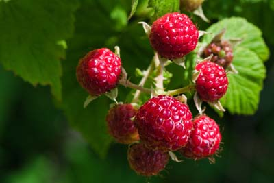

Welcome to our community
How to Revel in Berries in Bear Lake
Every summer, northern Utah’s Bear Lake area awakes from its winter slumber to welcome visitors who drive up to escape the heat of lower locales. Boats come out, beachside picnic tables fill up, and kids run straight into the chilly ice-blue water without a moment’s hesitation. The town of Garden City springs to life, its shops and restaurants preparing for their seasonal spike in boaters and beach-goers. But another draw, the local raspberry stands, sweetens the proverbial deal.
Bear Lake’s been known for its top-notch raspberry production for a hundred years, as it’s situated just-so-right geographically for berry growing. The 6,000-foot elevation keeps the temps relatively cool in the summer—and while this equates to a growing season too short for most crops, it’s perfect for raspberry plants.
For decades, Bear Lake raspberry farms grew a plentiful crop of gem-colored berries. A sweet local industry sprang up, with berry stands along the road, berry shakes in every diner and ice cream parlor, and raspberry jam shipped to stores in Salt Lake and Idaho.
However, in the early 2000s, there was a serious bump in the road when a fierce virus attacked entire farms of berry plants. The plants were rendered unsalvageable, forcing farmers to dig them up and completely restart with new plants that would take multiple seasons to mature and start producing.
Some farmers found it too devastating to start over again. But a few dug in, literally, and placed their bets with all new plants. The trademark local berry, the Canby, is wonderfully sweet but isn’t particularly resistant to viruses. The farmers who re-planted Canbys were really going all in.
Fortunately, their bets paid off and the raspberry crop has largely recovered. There are fewer farms than before, but those who remain are deeply committed.
Continue Story Here